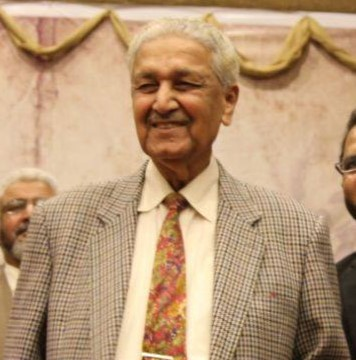

A. Q. Khan Abdul Qadeer Khan
1936 - 2021
Nuclear Physicist
Dr. Abdul Qadeer Khan was a renowned Pakistani nuclear scientist. He was born on September 1, 1936, in Bhopal, India. After the partition, he migrated to Pakistan with his family. He studied metallurgy and earned advanced degrees in Europe. Dr. Khan played a vital role in developing Pakistan’s nuclear program. He established the Kahuta Research Laboratories (KRL). Under his leadership, Pakistan became a nuclear power in 1998. He is often referred to as the “Father of Pakistan’s nuclear bomb.” Dr. Khan received many national awards, including the Nishan-e-Imtiaz. He passed away on October 10, 2021, but remains a national hero.
Biographies
- Dr. Abdul Qadeer Khan was a Pakistani nuclear scientist who made Pakistan a nuclear power and is known as the "Father of Pakistan's nuclear bomb."
- Studied Metallurgical Engineering in Germany and later completed higher studies in the Netherlands and Belgium
- Nuclear Science and Engineering
- Developed Pakistan’s nuclear weapons program
- Founded and led the Kahuta Research Laboratories (KRL)
- Received several honors including Nishan-e-Imtiaz (twice)
- Dr. Abdul Qadeer Khan was a national hero who empowered Pakistan with nuclear strength through his unmatched scientific contributions.